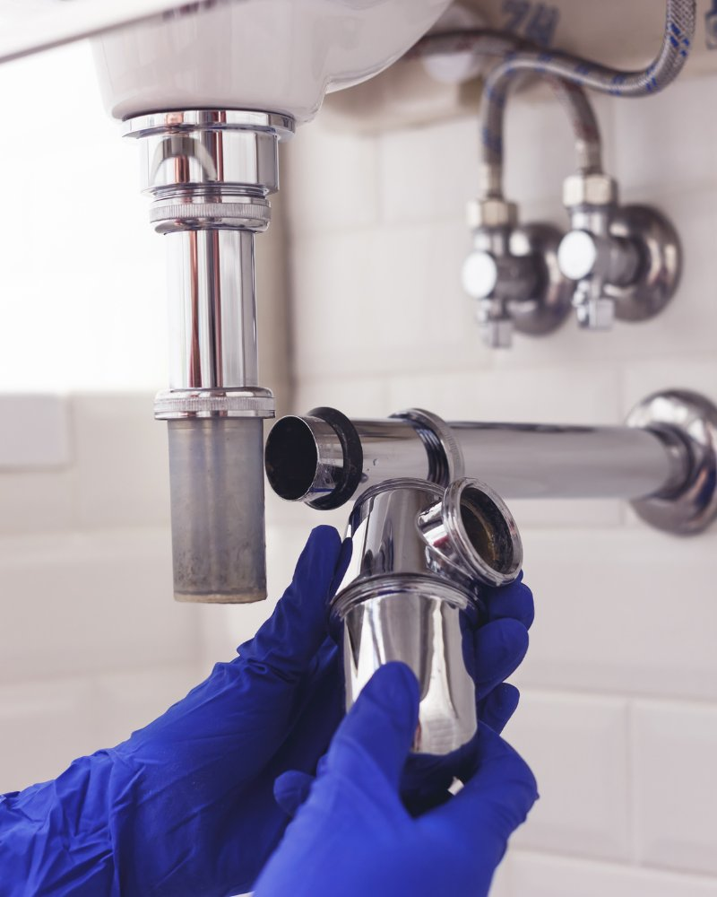

When a plumbing emergency strikes, every minute matters. City Plumbing Services covers Greater Manchester around the clock — day, night, weekends and bank holidays.
A burst pipe in the middle of the night or a sudden leak on Christmas Day can cause serious damage to your home or property in a very short space of time. The longer water is left unchecked, the more it spreads — through floorboards, into ceilings below, soaking insulation and causing structural damage that costs far more to put right than the original plumbing fault.
City Plumbing Services has been dealing with plumbing emergencies across Manchester since 2009. Our engineers are experienced, fully equipped, and ready to take your call at any hour. We'll talk you through what to do while you wait — including how to isolate your water supply — and get to you as quickly as we can.

A straightforward process from the moment you pick up the phone.
Ring 0161 000 0000 any time of day or night. Tell us what's happening and where you are — we'll advise you on immediate steps like turning off your stop tap to limit damage while you wait.
We'll send the nearest available engineer to your property. Our vans are stocked with the parts and tools needed to handle the most common emergency plumbing situations without a return visit.
Once on site, the engineer will assess the situation properly before touching anything. You'll be told exactly what the problem is and what it will take to fix it, with no surprises.
The repair is completed to a proper standard — not just a temporary patch. We test everything before we leave to make sure the problem is fully resolved and your system is working safely.
A plumbing emergency can take several forms. The most obvious is a burst pipe — particularly common during cold snaps when water inside pipes freezes, expands, and splits the pipe open. When the temperature rises and the ice thaws, water starts pouring out. If you're not home when this happens, you can come back to serious flooding. Even if you are home, a burst pipe can release a significant amount of water in a short time. The first thing to do in any flooding situation is turn off your main stop tap, which is usually found under the kitchen sink or where the supply pipe enters the property.
Leaking pipes are another common emergency call. Sometimes a leak starts small — a slight drip that seems manageable — but the damage it causes over days or weeks is anything but. Water finding its way into wall cavities, sub-floors or ceiling voids causes rot, damp, mould and in some cases structural issues. It can also cause damage to electrical systems if it gets near wiring or consumer units. If you notice a leak, don't leave it and hope for the best. Get it looked at properly.
Blocked drains and toilets that are actively overflowing are also emergencies. A toilet that won't flush and is backing up, or a drain that's causing wastewater to pool in your home, is a hygiene issue as much as a plumbing one. Our engineers carry the tools needed to clear blockages and restore flow — from hand rods through to powered equipment for more stubborn blockages further down the line.
Loss of hot water is another situation where people call us urgently — particularly in winter or where there are young children or elderly residents in the property. While not dangerous in the same way as flooding, it's genuinely disruptive and often points to a boiler fault that needs a qualified engineer to diagnose. We're Gas Safe registered (reg: 000000), which means our engineers are legally qualified to work on gas appliances and can deal with boiler-related emergencies as well as general plumbing.
If you suspect a gas leak — you can smell gas, hear a hissing sound near a pipe or appliance, or your carbon monoxide alarm goes off — leave the property immediately, don't use any electrical switches, and call the National Gas Emergency Service on 0800 111 999. Once you're safe and the gas has been isolated, give us a call and we can get your system checked and back in working order.
City Plumbing Services has been dealing with emergencies across Greater Manchester for over 15 years. Dave Halloran started the business in 2009, and we've built a reputation on turning up when people need us most and doing the job right. We cover the whole of Greater Manchester — from Manchester city centre through to Stockport, Bolton, Wigan, Salford and beyond.
If water is actively damaging your property, you have no access to running water or sanitation, or you suspect a gas leak — that's an emergency. Situations like burst pipes, severe leaks, overflowing drains, no hot water (especially with young children or elderly residents), and boiler breakdowns are all situations we class as emergency call-outs.
Your internal stop tap is usually located under the kitchen sink, in a utility room, or where the supply pipe enters the building (often near the front of the house). It looks like a standard valve and turns clockwise to close (off). Turning it off will stop water flowing into your home and limit damage from a leak or burst pipe while you wait for help.
Evening, weekend and bank holiday call-outs do carry a different rate to standard daytime work — we'll always be upfront about this before we send anyone out. You'll know what you're agreeing to before work starts. No hidden charges.
Yes — our engineers are Gas Safe registered (reg: 000000), which means they're qualified to work on gas appliances and pipework. If your boiler has broken down or you need a gas-related repair following an emergency, we can handle it. For an active gas leak, always call 0800 111 999 first and leave the property before calling us.
Boiler broken down, losing pressure, or showing an error code? We repair all major makes and models and carry out annual servicing to keep your system running efficiently.
Learn MoreFrom dripping taps and running toilets to leaking pipes and pressure problems — no job is too small. We cover all general plumbing repairs across Greater Manchester.
Learn MoreLegal requirement every 12 months. We carry out CP12 gas safety inspections and issue certificates the same day — covering single properties, HMOs and portfolios.
Learn More